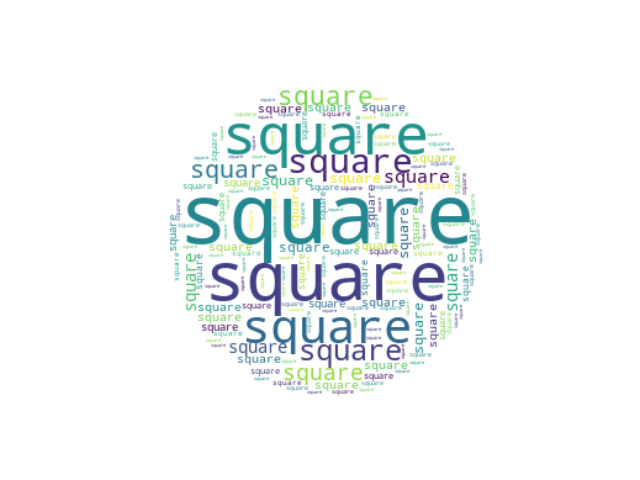

Note
Click here to download the full example code
Single Word¶
Make a word cloud with a single word that’s repeated.
import numpy as np
import matplotlib.pyplot as plt
from wordcloud import WordCloud
text = "square"
x, y = np.ogrid[:300, :300]
mask = (x - 150) ** 2 + (y - 150) ** 2 > 130 ** 2
mask = 255 * mask.astype(int)
wc = WordCloud(background_color="white", repeat=True, mask=mask)
wc.generate(text)
plt.axis("off")
plt.imshow(wc, interpolation="bilinear")
plt.show()
Total running time of the script: ( 0 minutes 0.334 seconds)